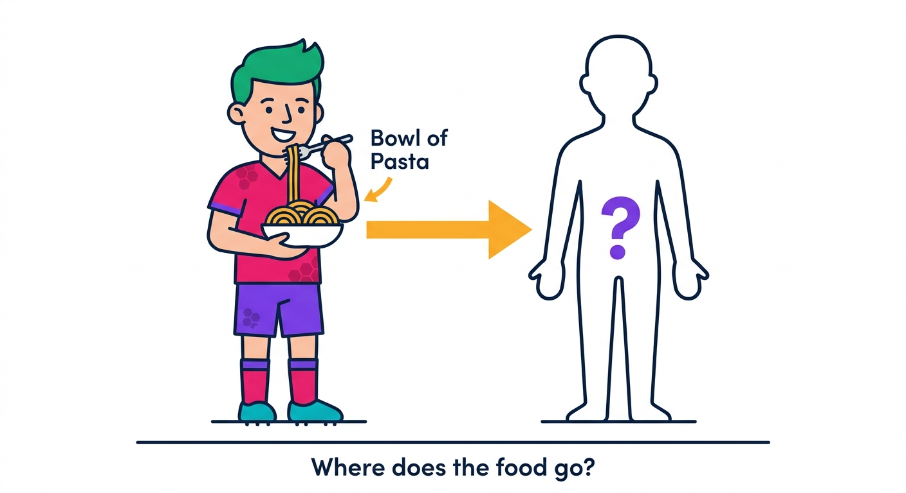
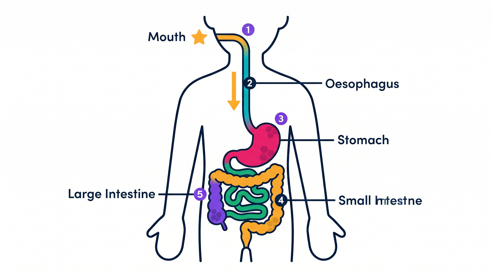
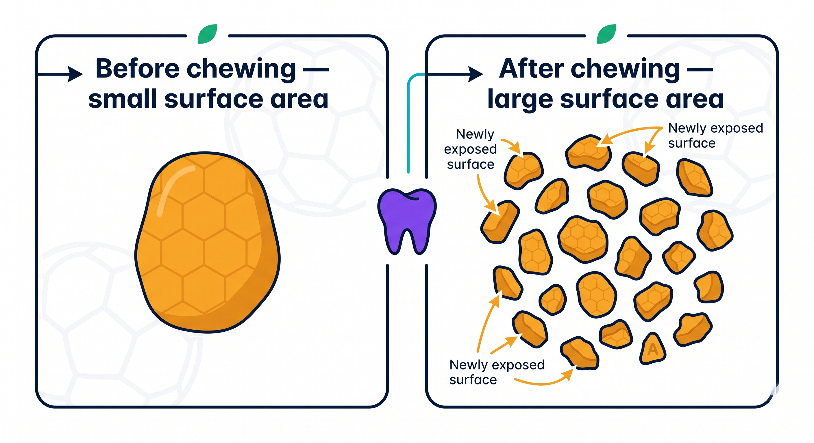
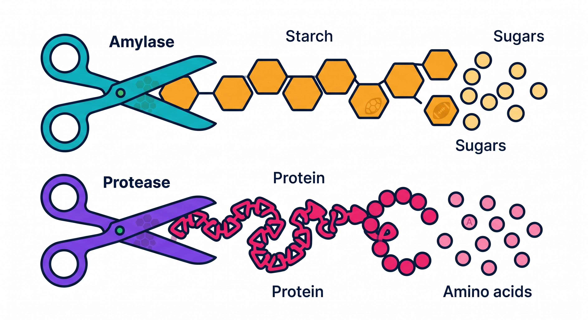
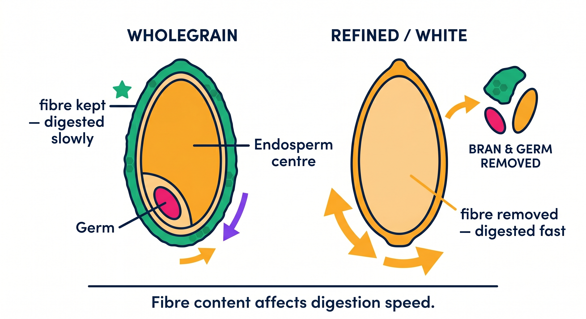
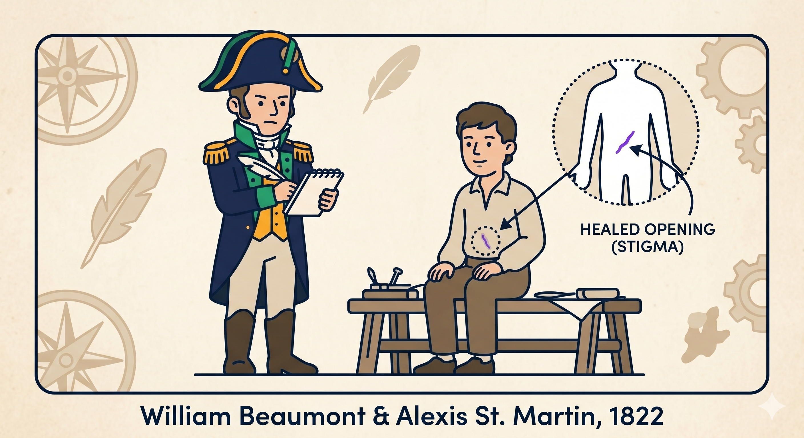
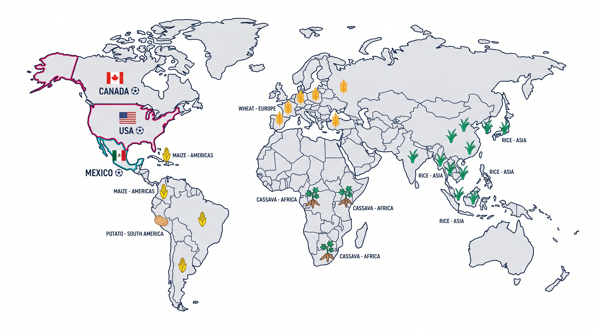

Do now — from memory, no notes.
1. Which food group is a footballer's main source of energy?
2. A player eats pasta 2 hours before kick-off. To get energy from it, the body must first…

Do now — from memory, no notes.
1. Which food group is a footballer's main source of energy?
2. A player eats pasta 2 hours before kick-off. To get energy from it, the body must first…
The squad sheet. Colours are used the same way on every diagram today.
Breaking food into small, soluble molecules the body can absorb.
Physically breaking food up (teeth, churning).
Using enzymes to break molecules apart.
A biological "scissors" that speeds up breakdown.
Enzyme that breaks starch into sugars.
Enzyme that breaks protein into amino acids.
The amount of surface exposed for enzymes to work on.
Able to dissolve, so it can pass into the blood.
Small molecules passing into the bloodstream.

Big idea: digestion turns big, insoluble food into small, soluble molecules the blood can absorb to fuel the player.
Mechanical digestion physically breaks food into smaller pieces. No chemicals, just force.
Quick check: why does chewing speed up digestion?


Amylase breaks starch into sugars (starts in the mouth).
Protease breaks protein into amino acids (in the stomach and small intestine).
🔬 Try it
Chew a plain cream cracker slowly and hold it on your tongue for a minute. It starts to taste sweet — your salivary amylase is breaking starch into sugar in real time.
Describe what you noticed in the cracker test. Which enzyme caused it?
Explain the cracker test using amylase, starch and "sugars".
Predict: would a wholemeal cracker taste sweet faster or slower than a white one? Justify using fibre and surface area.

This is why whole foods are healthier — and why they win matches.
⚽ Decide & justify
A player needs steady energy for 90+ minutes, maybe extra time. Which bread before the match — wholemeal or white?

How did we learn what happens inside a stomach? The evidence got better over time.
Galen thought the stomach was a cauldron that "cooked" food with body heat. Wrong, but believed for ~1,500 years.
Spallanzani swallowed tubes and sponges and showed food is dissolved by gastric juice — a chemical process, not just crushing.
Beaumont watched gastric juice digest food through St. Martin's fistula, running ~238 experiments.
🧠 Think
Beaumont's patient was poor and depended on him for years. Was this good science and ethical? How did each scientist's evidence improve on the last?

The world runs on starchy staples — but each region has its own.
🌍 Research it
Pick one host nation's staple dish. Is its main carbohydrate whole or refined? How would that affect a player's energy?
🎨 The journey of the pre-match pasta
Design a labelled comic strip or infographic that follows a footballer's pasta through the body. It must show mechanical then chemical digestion and name amylase and protease where they act.
🤖 Spot the hallucination
Teacher-led. AI sounds confident even when wrong. Hunt the planted mistakes using what you learned today.
🍽️ Slow-release meal designer
Design a pre-match meal that gives steady energy across 90 minutes. Pick the foods, then explain the digestion science: which are wholegrain, what amylase does, and why you avoided a sugar spike.
🏁 The whistle
Mechanical digestion physically breaks food up (teeth, churning) to increase surface area. Chemical digestion uses enzymes — amylase on starch, protease on protein — to make molecules small and soluble enough to absorb. Whole foods are digested slowly, giving steadier energy.
✍️ 3-2-1 exit ticket
1. Which is an example of mechanical digestion?
2. What does amylase do?
3. Why are whole foods digested more slowly?